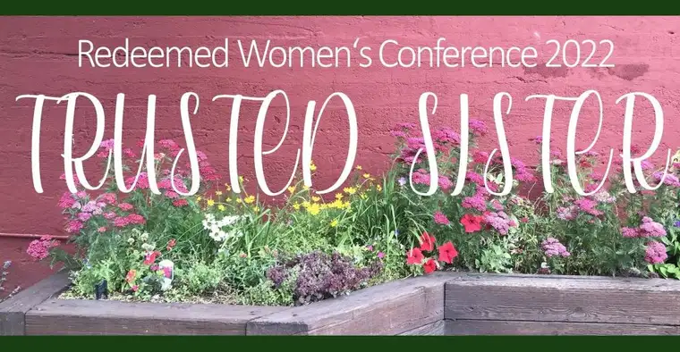

FARGO — Somewhere along the way, it seems, too many Christian women lost sight of each another and how we’re meant to build up the body of Christ together.
The Diocese of Fargo’s Redeemed 2022 “Trusted Sister” Women’s Conference event in early March seeks to revive that life-giving clasping of sisterly hands.
Marissa Duppong, part of the conference planning committee and mother of three young boys, says she’s been feeling for a while now that something is missing in how we, as women, are living life these days.
“Especially since becoming a mom, I’ve been thinking, ‘This is not how it’s supposed to be. We’re not supposed to be in our own little houses, lonely and suffering alone.’”

While she embraces motherhood in all its joys and sorrows, she adds, “If all you have is a relationship with Christ, you’re still going to have a lack in your life.” After all, “God called us to be in community.”
Duppong says she’s met women who claim they’ve never experienced authentic friendship, which is why the “Trusted Sister” theme of this year’s conference appeals so deeply. “How can we be true friends, truly who we were created to be, and encourage others to be like that, too?”
Setting the tone
To set the tone, the event will open with an evening of music, witness and Eucharistic Adoration, featuring the Vigil Project, including a reflection by recording artist Amanda Vernon, whose singing venues have included World Youth Day events in Sydney and Madrid, and performing the National Anthem at Lambeau Field.

Varying from past diocesan conferences that included breakout sessions, this year’s gathering will have everyone in the same room for all events.
The speaking lineup will launch with Helen Alvaré, professor of law at George Mason University and prolific communicator on marriage, parenting, non-marital households and First Amendment religion clauses.
Sharing her thoughts by email, Alvaré said the “Trusted Sister” theme reminds her of women “finding particular joy in each other’s company,” in part from our common experiences as daughters, mothers and sisters.
“There are always lights and shadows,” she adds of this journey of accompaniment, with light coming from our being in solidarity over both small and significant joys and sorrows we share, but with the threat of shadows, which often emerge from our common refrain of being “too busy.”

The latter, she adds, makes reflecting on our own lives difficult, not to mention the ability to pause long enough to think about the good of another person. “And then there’s the ‘guts’ it takes to suggest a course correction to a friend. And the time it takes to stop and give them an ‘atta girl’ or special help.”
This lack of time prevents a full relationship, she says, but we’re not without hope. By “keeping money and other worldly rewards in their place,” we can create more space for one another, and allow God’s presence to permeate our lives and relationships.
Sharing stories
Dr. Ken Flanagan, associate professor of social work at the University of North Dakota, says the theme applies especially well to the time of year — entering Lent — and our experiencing together a third year of a health crisis.
“It’s really been discombobulating,” he says of the pandemic. “The longer it goes on, we’re seeing longer-term impacts, not only in terms of physical and emotional health, but also in social relationships.”
He’ll address the role of relationship, “particularly the sister relationship,” by highlighting key attributes, along with barriers that can develop, offering helpful strategies in overcoming these obstacles, and concrete examples of women saints and biblical characters.
Flanagan notes that all Christian relationships are rooted in the Trinity and life-giving. “No relationship exists solely for itself, including sister relationships,” he says, asking, “What are the purposes of these relationships for others?”
Marcie Stokman, founder of the Well-Read Mom book club ministry, will talk about becoming aware of who we are as sisters at the deepest level by sharing stories, including a personal one on how she learned about forgiveness.
Stokman says that culturally, women have moved far apart from one another. “We don’t even have a general consensus of the identity of womanhood right now,” she says. “We need to be more aware of how we’re journeying together, and how, when we live as sisters, we help each other on the way to heaven.”
In it together
Jennifer Anderson, event emcee, says she’s looking forward to exploring the importance of trust, and, though oftentimes elusive, how essential it is in living a life in Christ.
“As women, we’re caregivers, and we love so much. We can also be hurt, and turn to anger, and experience frustration, depression and anxiety,” says Anderson, a licensed therapist. “When this happens, our safety net starts to break away. As women, we need to turn to God, and trust in God and our sisters in Christ.”

But it can be a tender process. “As a therapist, I see so many women separated from God because of these hurts,” she says, adding that she hopes attendees will come to better understand, or be reminded, that “God loves us where we are, and the Church is the hospital” to heal those hurts.
“My goal with this upcoming conference is that we would see that we are all beloved daughters of Christ,” along with turning to Jesus’ mother, Mary, to help us remember that we “don’t have to do it all alone.”
Those attending the conference who are in the fields of nursing, social work and counseling will have a chance for free continuing education units. The registration form includes an accreditation option.
“As a committee, we decided that we’ve got some really amazing speakers, many in the helping fields, where a lot of us have struggled with compassion fatigue,” Anderson says, noting that she hopes those participants will find refreshment of soul while earning credits toward their profession.
Duppong says that while Catholic in focus, the conference “will be very relevant to anyone hungering to learn more about Christ and grow in a relationship with other women.”
For those in outlying areas in North Dakota, satellite options will be offered at parishes in Carrington, Grafton, Jamestown, New Rockford and Rugby.

If you go
What: Diocese of Fargo’s Redeemed 2022 “Trusted Sister” Women’s Conference
When: 5:30 p.m. Friday, March 4, to 5:30 p.m. Saturday, March 5
Where: Fargo Delta Marriott, 1635 42nd St. SW
Cost: $50 for early registrants, includes meals; $75 after Feb. 14; $35 for satellite participants
Register: https://www.fargodiocese.net/redeemed-registration through Feb. 27, or call 701-356-7900; satellite options available through participating parishes
[For the sake of having a repository for my newspaper columns and articles, I reprint them here, with permission, a week after their run date. The preceding ran in The Forum newspaper on Jan. 28, 2022.]